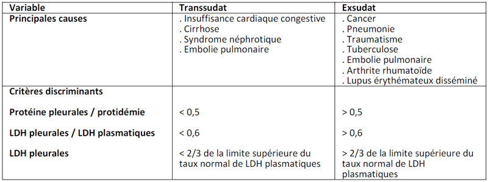

Bienvenue Sur Medical Education
Ponction pleurale
AdulteSpécialité : pneumologie /
Points importants
- Prélèvement de 35 à 50 mL de liquide nécessaires pour l’analyse
- Ponction évacuatrice si mauvaise tolérance
- Certains dosages complexes et coûteux : importance de la présentation clinique pour guider les examens
- Guidage échographique si difficulté à ponctionner ou épanchement peu abondant
Indications
Ponction pleurale exploratrice
- Analyse du liquide pleural à la recherche de l’étiologie, en particulier en distinguant les transsudats des exsudats
 fichier_707 Tableau Différences entre les épanchements pleuraux exsudatifs et transsudatifs
- Si la cause de l’épanchement est évidente, la ponction exploratrice n’est pas obligatoire mais sera à rediscuter en cas d’inefficacité du traitement
Ponction pleurale thérapeutique
- Evacuation du liquide en cas de détresse respiratoire chez un patient avec épanchement abondant
Contre-indications
- Pas de contre-indication absolue
- Patients sous anticoagulant, coagulopathie, thrombocytopénie : peu de données disponibles. Transfusion plaquettaire à discuter au cas par cas chez les patients avec thrombocytopénie sévère
- Différer la ponction pleurale si défaillance hémodynamique ou respiratoire sévère (sauf si l’épanchement en est la cause)
- Infection cutanée au point de ponction prévu
Présentation du matériel
- Charlottes
- Masques
- Compresses stériles
- Gants stériles
- Solution antiseptique (Bétadine ou chlorhexidine)
- Champ stérile troué autocollant
- Aiguilles 22 et 25 G + Lidocaïne (Xylocaine) à 1% ou 2% + seringues de 10 mL pour l’anesthésie locale
- Seringues 20 et 50mL + Cathlon G14 ou G16 ou G18 + Robinet à 3 voies pour la ponction
- Tubes à prélèvement stériles (4)
- Redon avec tubulure
- Bocal
- Film transparent adhésif (Opsite)
Description de la technique
fichier_830 fichier_830 - - - Ponction pleurale
- Expliquer la procédure au patient
-
Position du patient :
- assis au bord du lit, penché en avant, avant-bras appuyés sur une table et tête posée sur les avant-bras
- en décubitus latéral si le patient ne peut pas s’asseoir
-
Repérer et marquer le futur point de ponction :
- en pleine matité
- généralement 1 à 2 espaces intercostaux sous la limite supérieure de celle-ci
- à 5 à 10 cm des épineuses
- au bord supérieur de la côte inférieure pour éviter le paquet vasculo-nerveux
- jamais au-dessous de la 9e côte
- Lavage chirurgical des mains
- Port de gants stériles
- Désinfection cutanée par solution antiseptique
- Application du champ stérile troué
- Anesthésie de l’épiderme au futur point de ponction (aiguille 25 G et Xylocaïne)
- Insertion au point de ponction de l’aiguille 22 G perpendiculairement à la paroi
- Anesthésie plan par plan de la peau à la plèvre par Xylocaïne 1%, en alternant une traction sur le piston de la seringue et une injection d’anesthésique de quelques dixièmes de mL chaque 2 à 3 mm, jusqu’à l’aspiration du liquide pleural
- Injecter alors une dose de Xylocaïne pour anesthésier la plèvre pariétale (noter la profondeur à laquelle vous avez atteint la plèvre)
- Fixer un cathlon 18 G à une seringue et insérer l’aiguille en maintenant une traction du piston de façon continue
- Dès que le liquide pleural est obtenu, guider le cathéter à la peau et retirer l’aiguille
- Poser un doigt sur le cathéter pour éviter l’entrée d’air dans la cavité pleurale puis fixer au cathéter un robinet à trois voies relié à une seringue 50 mL
- Aspirer 50 mL de liquide pour analyse diagnostique
- Verser les 50 mL dans les 4 tubes à prélèvement
-
Dans le cas d’une ponction évacuatrice :
- relier la troisième voie du robinet à une tubulure et mettre l’autre extrémité de la tubulure dans le bocal, permettant un drainage du liquide
- ne pas évacuer plus de 1500 mL en moins de 30 min
- A la fin de la procédure, retirer le cathéter en fin d’expiration et couvrir le point de ponction avec une compresse et un film adhésif transparent
-
Remplir 3 tubes pour analyse :
- tube sec pour biochimie (LDH, protéines, glucose)
- tube EDTA pour cytologie
- tube pour bactériologie
-
Résultats :
-
transsudat :
- rapport protides pleuraux / protidémie < 0,5
- rapport LDH pleuraux / LDH plasmatiques < 0,6
- causes : insuffisance cardiaque congestive, cirrhose, syndrome néphrotique
-
exsudat :
- rapport protides pleuraux / protidémie > 0,5
- rapport LDH pleuraux / LDH plasmatiques > 0,6
- causes : pneumonie bactérienne, traumatisme, cancer
-
transsudat :
fichier_707 Tableau Différences entre les épanchements pleuraux exsudatifs et transsudatifs
Précautions d’emploi
- Le conteneur pour aiguilles usagées doit se trouver auprès du patient
-
Prélever 4 tubes :
- un pour l’analyse cyto-bactériologique
- un pour l’analyse biochimique
- les deux autres tubes vont au réfrigérateur et serviront à remplacer un tube égaré ou accidenté, à la recherche de bacille de Koch, à un dosage, un examen anatomo-pathologique demandé plus tard
- Prémédication par atropine 0,5 mg SC ou IM possible chez les sujets anxieux
- Pas d’injection de lidocaïne en cas d’allergie au produit
Complications
- Pneumothorax : rare, requérant rarement une thérapeutique quand il existe
- Douleur
- Toux
- Réaction vagale
- Infection locale
- Hémothorax
- Lésion d’un organe intra-abdominal
- Œdème pulmonaire de ré-expansion : limité par l’arrêt de l’évacuation à 1500 mL
- Embolie gazeuse
Surveillance
CLINIQUE
- FR, SpO2, ampliation thoracique, PA, FC, bullage
RADIOGRAPHIE PULMONAIRE
- Après ponction (systématique) : si aspiration d’air pendant la procédure, douleur thoracique, dyspnée, hypoxie, ventilation mécanique
Bibliographie
- Thomsen TW, DeLaPena J, Setnik GS. Thoracentesis. Videos in clinical medicine. N Engl J Med.355, 2006
- Light RW. Pleural effusion. N Engl J Med. 346 :1971, 2002
- Collège national des enseignants de reanimation médicale. Réanimation médicale. Masson, 2001
- Ellrodt A. Urgences Médicales. Estem, 2005
Auteur(s) : Jean-François VIGNEAU